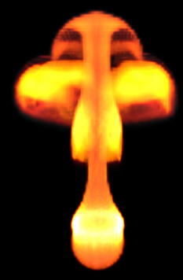
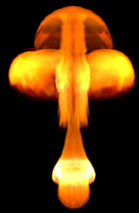
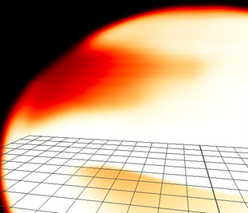
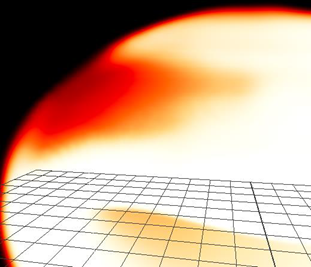

渲染 Aero 和燃烧模拟时可能出现瑕疵。这些瑕疵可能由多种因素造成，适用的处理方法取决于模拟。
通常，在评估瑕疵时，应查看渲染的结果，而不是视口中的预览。尽管在许多情况下，这些看起来相似，但在某些情况下，视口预览并不平滑。
| 视口 | 渲染 (Arnold) |
|---|---|
|  |  |
如果渲染图像中出现瑕疵，可以直接在渲染器进行修复。例如，如果您在 Arnold 中使用 aiStandardVolume 着色器，可以尝试将插值设置为三元三次，而不是默认的三线性。
| 三线性(Trilinear)（默认值） | 三元三次(Tricubic) |
|---|---|
|  |  |
如果无法通过调整着色器消除瑕疵，请尝试下面的子部分中描述的方法。